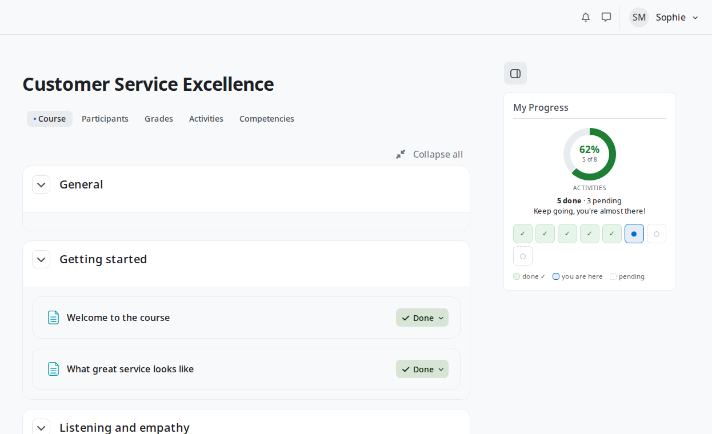
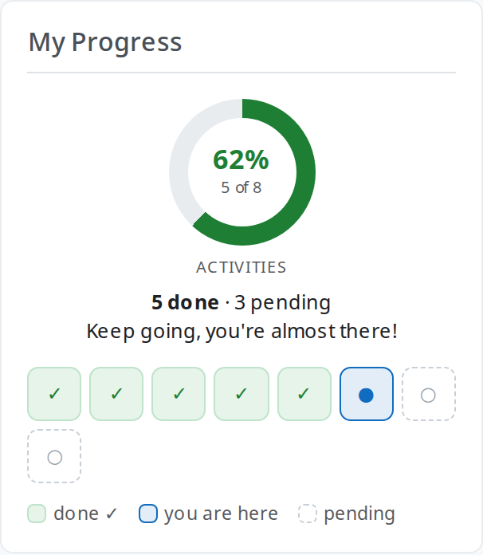
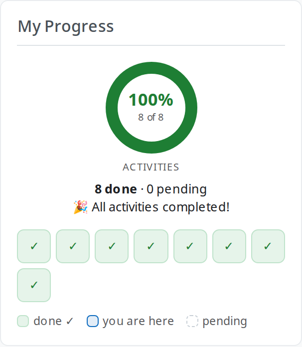
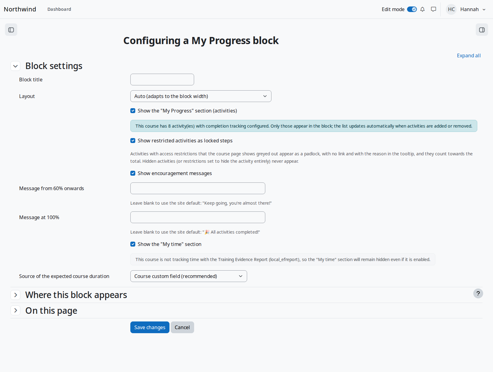
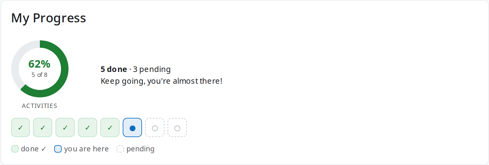
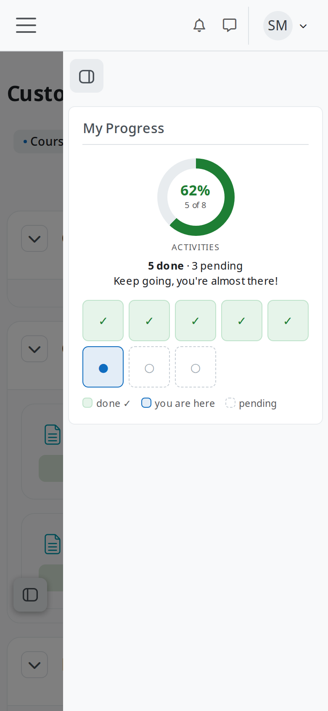

Free block for Moodle™
My Progress
Every student knows how much is left.
Plugin guide · block_efprogress
Version 0.6.1 · Works with Moodle™ 5.1, 5.2 and 5.3
Developed and maintained by eLearning Fácil
An independent company that builds plugins for Moodle™ to save time for training providers and
companies: time tracking, reports, certificates and student management.
elearningfacil.com · info@elearningfacil.com
Contents
Table of contents
Guide
The student’s block
Their progress in the course at a glance: what is done, where they are and what is left.
1What it is and what it is for
My Progress is a course block that shows each student their own progress: a ring with
the percentage of activities completed and one mark per activity, so they know what they have done, where they are
and how much is left.
- Progress ring with the percentage and “N of M” activities.
- One mark per activity: ✓ done · ● you are here · ○ pending. Every mark links to its activity.
- Encouragement messages from 60% and at 100%, with texts you can change.
- A live list: activities added or removed during the course appear and disappear on their own.
- It uses Moodle’s official activity completion, whatever the method (view, grade…): the block only
reflects it and changes nothing.
- Lightweight and built mobile-first. It stores no personal data.
2Installation
- Back up your site before installing: database, moodledata folder and code. It is good practice with
any plugin.
- Site administration → Plugins → Install plugins: upload the ZIP and confirm.
- In the course, turn Edit mode on, open the block drawer and choose Add a block → My Progress.
- Check with a student account that the block appears with their activities.
First things first: activity completion
The block counts the activities that have
completion enabled. If none has it, students see nothing; teachers
then see a hint in the block explaining why.
Requirements: Moodle™ 5.1, 5.2 or 5.3 · PHP 8.2 or later · MySQL/MariaDB or PostgreSQL.
3What the student sees

The block on the course page, usually in the side drawer, next to the course content.

5 of 8 done: the ring, the encouragement from 60% and the marks.

At 100%: “All activities completed!”.
| Mark | What it means |
|---|
| ✓ done | Activity completed. If it was completed with a failing grade, the mark is amber and says so. |
| ● you are here | The first pending activity the student can open: where to carry on. |
| ○ pending | Activity not completed yet. |
| padlock: locked | A restricted activity (by date, by completing another one first…) that the course page shows greyed out. No link; hovering over it, or tapping it on a phone, shows the reason. |
| ✓ done outside the period | Only with the eLearning Fácil report installed: an activity completed outside the student's training period (course dates, their group sheet or their enrolment). Drawn greyed with a dashed border, counted apart (“N outside the period”) and left out of the ring, exactly as the report does. |
- Locked activities count towards the total from day one, so “N of M” doesn’t jump as they unlock.
- Hidden activities, activities restricted to another group and restrictions set to hide entirely
never appear and don’t count.
- The 100% message never says “course completed”: course completion may depend on criteria the block doesn’t see.
4Block settings
With edit mode on: block menu → Configure My Progress block. Each course has its own.

| Setting | Default | What it does |
|---|
| Block title | My Progress | Change it if you want another name. |
| Layout | Automatic | Automatic, vertical or horizontal (section 5). |
| Show the “My Progress” (activities) section | Yes | The ring and the marks. Below it, the form tells you how many course activities have completion. |
| Show restricted activities as locked steps | Yes | The padlocks from section 3. Untick it to show only accessible activities. |
| Show encouragement messages | Yes | The 60% and 100% messages. |
| Message from 60% onwards / Message at 100% | Empty | Texts for this course only. Left empty, the site texts are used. |
| Show the “My time” section and Source of the expected course duration | Yes · course field | Only work with eLearning Fácil’s reporting plugin (section 7). |
5Vertical or horizontal layout
Under Layout you choose how the block is arranged:
- Automatic (recommended): the block looks at its real width; in a side column it is vertical and in a
wide area it switches to horizontal. It works with any modern theme.
- Vertical: for the side column.
- Horizontal: the ring and counters in a row and the marks across the full width, for a wide area such as
above the course content.

The block in horizontal layout, in a wide area.
6Site settings
In Site administration → Plugins → Blocks → My Progress:
| Setting | What it does |
|---|
| Default message from 60% | Out of the box, “Keep going, you are almost there!”. Each course can change it. |
| Default message at 100% | Out of the box, “All activities completed!” with a party icon. Each course can change it. |
| Course custom field holding the expected duration | Short name of the course field holding the expected hours (accepts “30”, “30 h”, “7.5”, “90 min” or hh:mm). Only the “My time” section uses it. |
7The “My time” section
The block can also show a My time section: the time spent and, with an expected course duration, a second
ring with the percentage and the time left.
Only with eLearning Fácil’s reporting plugin
This section appears
only if the site has eLearning Fácil’s reporting plugin installed
(
local_efreport, a paid plugin that is part of the Training Evidence Pack) and the course measures time with
it. Without it, the section stays hidden even when ticked, and everything else works the same. In the block
settings, a note tells you whether the course measures time.
- With that plugin installed, the activities ring also uses the same figures as its report: the block and
the report cannot disagree.
- The expected duration comes from the course field (section 6), is set manually in the block, or is left out to
show the total time only.
- Figures are rounded down: 29 h 59 min is not 100% of 30 h.
8Accessibility and mobile

On a phone, inside the block drawer.
- Built mobile-first: the marks wrap into rows to fit the width.
- On touch screens, the first tap on a mark shows a bubble with the activity name and status; the second
tap opens it.
- Every mark has its own screen-reader label (“Topic 2 — done ✓ · click to open”), and states don’t rely
on colour alone: they have a symbol and a legend.
- Marks are ordinary links: you can move through them with the keyboard.
9Who sees it, permissions and privacy
- The block is shown only to users with their own progress in the course: enrolled students. Each one sees
only their own data.
- Teachers and managers don’t see it as students do; if the course has no activity with completion, they see a hint.
- The
block/efprogress:addinstance capability lets editing teachers and managers add the block.
- It stores no personal data (declared privacy provider). Its settings travel with course backups.
Free software (GPL v3), built to the Moodle™ plugin guidelines: no external calls or third-party resources,
automated tests and code review on every release.
10Frequently asked questions
A student doesn’t see the block
Check that they are enrolled as a student and that some activity has completion enabled.
An activity doesn’t appear
Only activities with completion appear. Hidden ones, those for another group and those with a restriction that
hides them entirely never appear.
A restricted activity doesn’t show a padlock
Its restriction is set to hide entirely, the activity is hidden, or “Show restricted activities as locked steps”
is unticked in the block.
At 100% the course doesn’t show as completed
The block counts activities; course completion has its own criteria (grades, dates…). That is why the message
says “All activities completed!” and not “course completed”.
I ticked “My time” and nothing shows
That section needs eLearning Fácil’s reporting plugin measuring time in the course (section 7).
eLearning Fácil
More plugins by eLearning Fácil
Built for training providers, companies and academies that work with Moodle™.
Want to know more?
Drop us a line and we’ll tell you which one fits your Moodle™.
elearningfacil.com
info@elearningfacil.com · WhatsApp +34 647 002 997
Guide for the block_efprogress plugin · version 0.6.1 · © 2026 eLearning Fácil · elearningfacil.com
Moodle™ is a registered trademark of Moodle Pty Ltd. SCORM® is a registered trademark of Advanced Distributed Learning (ADL). eLearning Fácil is not affiliated with, associated with or endorsed by either; the names are used only to describe compatibility.